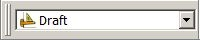

Creating a simple part with Draft and Part WB/es
| Tema |
|---|
| Modelado |
| Nivel |
| Principiante |
| Tiempo para completar |
| 1,5 horas |
| Autores |
| heda |
| Versión de FreeCAD |
| 0.19 o superior |
| Archivos de ejemplos |
| Ver también |
| Creación de una pieza simple con Part WB, Creación de una pieza simple con PartDesign |
Introdución
Este tutorial pretende ser una primera introducción al Draft Workbench 
{kind=link}
El Tutorial cubre
- El modelo a crear
- Creación del perfil 2D
- Por qué puede fallar la extrusión
- Extrusión del perfil
- Creación del orificio pasante
- Creación de un boceto a partir del perfil 2D
- Calidad de los modelos
- Conclusiones
El modelo a realizar


Creación del perfil 2D
Crea un nuevo documento y guárdalo directamente con un nuevo nombre. Cambia la vista a la vista  Top y cambia a la vista
Top y cambia a la vista  Draft Workbench, tu pantalla debería verse como la siguiente. Si la cuadrícula no se muestra, actívala o desactívala con
Draft Workbench, tu pantalla debería verse como la siguiente. Si la cuadrícula no se muestra, actívala o desactívala con  Toggle Grid.
Toggle Grid.

Para comenzar el perfil, dibuje un rectángulo aleatorio en el plano xy haciendo clic en dos puntos de la vista 3D que formen cualquier diagonal. Se abrirá un panel de tareas al ejecutar el comando; en este caso no lo utilizaremos, pero también puede introducir las coordenadas del rectángulo directamente. Ahora debería aparecer un rectángulo dibujado en la vista 3D, similar a la imagen que se muestra a continuación.

Cuando se trabaja en el Draft Workbench, casi siempre se dibuja en un plano 2D. Ese plano 2D se llama Plano de trabajo y, si se utilizan los ajustes predeterminados, siempre se alineará automáticamente con la vista 3D actual. Entonces, hasta que se complete el perfil 2D, es mejor simplemente mantener la vista superior (posición de la cámara) y no jugar con la rotación de la vista. Si lo cambió, simplemente vuelva a la vista superior antes de iniciar cualquier comando nuevo en Draft Workbench.
La vista lateral de nuestro modelo final tiene un contorno exterior de 100 x 50 mm, y sería conveniente que la esquina inferior izquierda se ubicara en la posición cero global. Esto se puede lograr mediante el editor de propiedades. Asegúrese de que el rectángulo creado esté seleccionado, luego cambie la posición del rectángulo a (0, 0, 0), modifique la altura a 50 mm y la longitud a 100 mm, como se muestra en las imágenes a continuación.

El Rectángulo está terminado y debería verse así después de aplicar  Ajustar todo a la vista.
Ajustar todo a la vista.

A continuación, dividiremos el rectángulo en sus cuatro aristas. Para ello, primero seleccionamos el Rectángulo y luego ejecutamos el comando  Draft Downgrade. La cara rellena desaparecerá y el objeto en la Vista de árbol se convertirá en un Cable en lugar de un Rectángulo, como se muestra en la imagen de la izquierda. Al ejecutar Draft Downgrade una vez más, el cable se dividirá en sus aristas, como se muestra en la imagen del medio.
Draft Downgrade. La cara rellena desaparecerá y el objeto en la Vista de árbol se convertirá en un Cable en lugar de un Rectángulo, como se muestra en la imagen de la izquierda. Al ejecutar Draft Downgrade una vez más, el cable se dividirá en sus aristas, como se muestra en la imagen del medio.

El observador notará que el icono del objeto en la Vista de árbol para el cable cambió a un "cuadro azul". Este cuadro azul es el icono utilizado para objetos geométricos genéricos (objetos geométricos de Part Workbench para ser específicos, pero eso es para lectores avanzados). Seleccione el borde vertical izquierdo e invoque el comando  Draft Upgrade, el antiguo "borde" ahora tendrá un icono diferente y ha cambiado la "etiqueta" a "Línea". Ahora es un objeto de "Draft Workbench" donde se puede editar, por ejemplo, el "punto de inicio" y el "punto final" a través del "Editor de propiedades", esto no es posible con los objetos "borde".
Draft Upgrade, el antiguo "borde" ahora tendrá un icono diferente y ha cambiado la "etiqueta" a "Línea". Ahora es un objeto de "Draft Workbench" donde se puede editar, por ejemplo, el "punto de inicio" y el "punto final" a través del "Editor de propiedades", esto no es posible con los objetos "borde".
Creación del filete
Comience seleccionando los bordes de la esquina superior derecha, use el menú Editar → Selección de cuadro  Selección de cuadro, mantenga presionado el
Selección de cuadro, mantenga presionado el  Botón izquierdo del ratón y arrastre de derecha a izquierda y suelte el LMB. Al arrastrar de derecha a izquierda, la selección resultante incluye todo lo que se encuentra total o parcialmente dentro del área de selección. Si se arrastra de izquierda a derecha, solo los objetos completamente encerrados por el área de selección se incluyen en la selección resultante. La selección real ocurre cuando se suelta el botón izquierdo del ratón, y no hay una vista previa de lo que se seleccionará.
Botón izquierdo del ratón y arrastre de derecha a izquierda y suelte el LMB. Al arrastrar de derecha a izquierda, la selección resultante incluye todo lo que se encuentra total o parcialmente dentro del área de selección. Si se arrastra de izquierda a derecha, solo los objetos completamente encerrados por el área de selección se incluyen en la selección resultante. La selección real ocurre cuando se suelta el botón izquierdo del ratón, y no hay una vista previa de lo que se seleccionará.

Con los bordes de la esquina superior derecha seleccionados, ejecute el comando  Fillet en el Entorno de trabajo de borrador. Marque Eliminar objetos originales y cambie el radio a 20 mm y pulse enter.
Fillet en el Entorno de trabajo de borrador. Marque Eliminar objetos originales y cambie el radio a 20 mm y pulse enter.

El Fillet se ha creado y su modelo ahora debería verse como se muestra a continuación.

Crear el chaflán
Para realizar el chaflán necesitamos tener una línea con la inclinación correcta y además poder posicionarla correctamente. Comencemos con la posición, que está en la coordenada (50, 50, 0). En el perfil actual no tenemos ningún punto allí, así que creemos uno creando una "línea de ayuda temporal". Primero seleccione la Línea vertical izquierda, luego cree la línea de ayuda mediante  Selección duplicada en Editar → Selección duplicada, se crea Line001. Utilice el editor de propiedades y mueva Line001 50 mm en la dirección x utilizando la propiedad Colocación. Luego duplique el borde horizontal inferior y cambie el ángulo del borde a 30 grados, una vez más usando la propiedad Colocación. El modelo ahora debería verse como la imagen de abajo.
Selección duplicada en Editar → Selección duplicada, se crea Line001. Utilice el editor de propiedades y mueva Line001 50 mm en la dirección x utilizando la propiedad Colocación. Luego duplique el borde horizontal inferior y cambie el ángulo del borde a 30 grados, una vez más usando la propiedad Colocación. El modelo ahora debería verse como la imagen de abajo.

A continuación, coloque la «línea angular» en su posición. Para ello, utilizamos  Draft Move junto con la funcionalidad de «ajuste» en el Entorno de trabajo de borrador, más concretamente el ajuste de «punto final». Primero, asegúrese de que su barra de herramientas de ajuste se vea similar a la siguiente.
Draft Move junto con la funcionalidad de «ajuste» en el Entorno de trabajo de borrador, más concretamente el ajuste de «punto final». Primero, asegúrese de que su barra de herramientas de ajuste se vea similar a la siguiente.

A continuación, seleccione la "línea en ángulo", Edge001, pulse Mover y se abrirá un panel de tareas.

Asegúrese de que la casilla "Copiar" esté desactivada. Pase el ratón por encima del cuarto superior de la línea en ángulo. Cuando aparezca el punto blanco en el lugar correcto y se muestre el símbolo del punto final, haga clic en el botón izquierdo del ratón (LMB). Mueva el ratón al cuarto superior de la línea de ayuda. Cuando aparezcan el punto blanco y el símbolo del punto final, haga clic en el botón izquierdo del ratón (LMB). La secuencia se ilustra a continuación.

La línea ahora está en la posición correcta, pero es demasiado larga. Para ajustar la longitud se utilizará  Draft Trimex. Seleccione la línea angular, Edge001, presione Recortar y luego haga clic en la parte inferior de la línea vertical más a la izquierda, Line, para usarla como borde de corte. La proyección del punto donde se selecciona el borde de corte sobre el borde que se va a cortar, determina el resultado. Si selecciona la línea vertical más a la izquierda cerca de su extremo superior, se recortará la parte incorrecta de la línea angular. La imagen a continuación muestra el comando Recortar invocado, la línea vertical preseleccionada y el cursor sobre el extremo incorrecto de esa línea. Si mira con atención, puede ver la vista previa del resultado.
Draft Trimex. Seleccione la línea angular, Edge001, presione Recortar y luego haga clic en la parte inferior de la línea vertical más a la izquierda, Line, para usarla como borde de corte. La proyección del punto donde se selecciona el borde de corte sobre el borde que se va a cortar, determina el resultado. Si selecciona la línea vertical más a la izquierda cerca de su extremo superior, se recortará la parte incorrecta de la línea angular. La imagen a continuación muestra el comando Recortar invocado, la línea vertical preseleccionada y el cursor sobre el extremo incorrecto de esa línea. Si mira con atención, puede ver la vista previa del resultado.

También recorta la línea vertical más a la izquierda para formar la esquina inferior del chaflán. Selecciona la "línea angular", Edge001, cerca de su extremo superior derecho para obtener un resultado correcto. Si cometes un error al recortar, simplemente usa  Deshacer y
Deshacer y  Actualizar (esta última a menudo llamada "recalcular") e inténtalo de nuevo.
Actualizar (esta última a menudo llamada "recalcular") e inténtalo de nuevo.

Para recortar el borde horizontal superior, es necesario degradar el redondeo para que el borde superior sea un objeto independiente en la vista de árbol. Si intenta recortarlo sin haberlo degradado previamente, la función de recorte intentará recortar el arco del redondeo. Dado que el borde de recorte, la línea vertical central, es perpendicular al borde que se va a recortar, no puede controlar el resultado del recorte seleccionando un punto exacto en dicho borde. En este caso, debe invertir la solución predeterminada manteniendo pulsada la tecla Alt mientras selecciona el borde de corte.
El perfil está listo y se muestra a continuación con los bordes organizados en un  Group llamado Perfil (o etiquetado para ser precisos en la jerga de FreeCAD), junto con la línea de ayuda eliminada. Los grupos se pueden usar para organizar las características en sus documentos de FreeCAD, su uso es similar a una estructura de carpetas en el sistema de archivos de una computadora. Para mover elementos dentro y fuera del grupo, use arrastrar y soltar en la Vista de árbol.
Group llamado Perfil (o etiquetado para ser precisos en la jerga de FreeCAD), junto con la línea de ayuda eliminada. Los grupos se pueden usar para organizar las características en sus documentos de FreeCAD, su uso es similar a una estructura de carpetas en el sistema de archivos de una computadora. Para mover elementos dentro y fuera del grupo, use arrastrar y soltar en la Vista de árbol.

¿Por qué puede fallar la extrusión?
Guarda el documento. En este párrafo vamos a experimentar y queremos poder volver al modelo actual.
Vamos a empezar: selecciona todos los bordes y la línea en el grupo Perfil, y en el  Part Workbench invoca el comando
Part Workbench invoca el comando  Extrude. Se abrirá un panel de tareas, acepta todas las opciones predeterminadas y haz clic en OK.
Extrude. Se abrirá un panel de tareas, acepta todas las opciones predeterminadas y haz clic en OK.

Eso no funcionó, pero parece bastante fácil corregir el error; solo necesitamos especificar una dirección. Haz clic en OK para volver al panel de tareas y selecciona "dirección personalizada".

Acepte el eje z predeterminado y vuelva a hacer clic en OK.

Hemos conseguido crear una estructura parecida a una valla; a juzgar por la vista de árbol, cada borde se trata por separado. No es el sólido relleno que buscamos. Pulsa Deshacer y probemos otra cosa.
Desplácese hasta el final del panel de tareas Extruir donde encontrará la opción Crear sólido, marque esa opción y haga clic en OK.

Todo desapareció, claramente eso tampoco funcionó. Analicemos por qué ninguno de estos métodos funciona. En el primer caso, obtuvimos un error que indicaba que no se podía determinar la dirección. Una cara plana tiene una normal, es decir, una dirección; una línea no. Dado que en nuestro segundo intento sabemos que funcionó al proporcionar una dirección, el error simplemente proviene de intentar extruir una línea sin conocer su dirección. El observador dirá que un arco tiene una normal (dirección), y esto es cierto. Si selecciona solo el borde que es el arco, FreeCAD lo extruirá, incluso con la configuración predeterminada.
En el segundo caso funcionó, pero también obtuvimos una extrusión para cada arista que teníamos en nuestra selección. Sin embargo, las características resultantes no son las que queremos, es decir, un sólido.
En el tercer caso, seleccionamos «Crear sólido» y todo desapareció. Los objetos en la vista de árbol también tienen un icono diferente: un signo de exclamación blanco sobre fondo rojo. Este icono de superposición indica que el objeto tiene un error que debe corregirse. Puedes consultar los diferentes tipos de iconos de superposición en la wiki.
Al pasar el cursor sobre cualquiera de los objetos de la vista de árbol con el icono de superposición, se muestra una información sobre herramientas que dice "El cable no está cerrado".

En nuestro caso, el error no tiene solución. Es geométricamente imposible crear un sólido a partir de una línea extruida. Una línea extruida se convierte simplemente en una lámina o "capa" en la jerga de FreeCAD. En otras palabras, no se trata de una limitación de FreeCAD, sino de una consecuencia fundamental de la teoría geométrica. La razón por la que la vista 3D se queda completamente en blanco es que las operaciones creadas, u objetos en la vista de árbol, presentan errores en su forma y, por lo tanto, no contienen nada que renderizar. Sin embargo, FreeCAD crea los nuevos objetos del documento (en este caso, extrusiones) y, por consiguiente, oculta cualquier geometría u objeto utilizado para su creación. Por eso la pantalla se queda en blanco al intentar crear un sólido a partir de una o varias líneas.
La información sobre herramientas lo explica todo: para extruir un sólido se necesita un "alambre cerrado o una cara". Una cara es, por definición, simplemente un alambre cerrado relleno. Una forma de crear un alambre cerrado a partir de los bordes del perfil es seleccionarlos todos y aplicar  Draft Upgrade. Si se aplica una vez, se convierte en un alambre, consumiendo al mismo tiempo los bordes individuales de la vista de árbol. Si se aplica dos veces, se convierte en una cara; cualquiera de las dos opciones permite una extrusión sólida exitosa.
Draft Upgrade. Si se aplica una vez, se convierte en un alambre, consumiendo al mismo tiempo los bordes individuales de la vista de árbol. Si se aplica dos veces, se convierte en una cara; cualquiera de las dos opciones permite una extrusión sólida exitosa.
Antes de pasar al siguiente párrafo: abra la versión anterior del documento.
Extrusión del perfil
Otra forma de crear el cable cerrado es con el comando  Shape builder del Part Workbench, que permite crear un cable sin consumir los bordes individuales. Part Shape builder es una poderosa herramienta para crear cualquier entidad geométrica en FreeCAD que puede usarse para crear sólidos complejos, el ejemplo más simple es crear una línea entre dos vértices. Haga clic en Constructor de formas de piezas para abrir el panel de tareas.
Shape builder del Part Workbench, que permite crear un cable sin consumir los bordes individuales. Part Shape builder es una poderosa herramienta para crear cualquier entidad geométrica en FreeCAD que puede usarse para crear sólidos complejos, el ejemplo más simple es crear una línea entre dos vértices. Haga clic en Constructor de formas de piezas para abrir el panel de tareas.

Podemos utilizar Cable desde los bordes o Cara desde los bordes. Se deben realizar varias selecciones con la tecla Ctrl presionada. Usemos Cara desde bordes, una vez seleccionada esa opción también se puede seleccionar Planar, hazlo también. Luego seleccione todos los bordes en el perfil, el orden no importa (en este caso) y haga clic en Template:Botón y luego en Template:Botón para volver a la Vista de árbol. La cara ha sido creada.

Seleccione la Cara e invoque Extrusión de pieza, establezca la longitud de extrusión en 30 mm y haga clic en OK.

Creación del orificio pasante
Para hacer el agujero pasante necesitamos un "cilindro" correctamente "posicionado" para realizar un "corte" booleano.
Crea un cilindro y colócalo correctamente. En este caso el radio es de 5 mm, la altura se establece en 60 mm. Para la ubicación, primero se gira -90 grados alrededor del eje x, luego se coloca en (65, -5, 15). El 5 negativo en la dirección y se debe a que la altura es 10 mm más larga de lo necesario.

No hay problema en que la altura del cilindro sea mayor de lo necesario. Para un modelo sencillo como este, no importa si el cilindro tiene la altura exacta del perfil. Sin embargo, es recomendable evitar caras coplanares para prevenir errores numéricos en el núcleo geométrico que a veces pueden provocar efectos extraños o fallos en operaciones posteriores.
Tras un último corte booleano y después de modificar la apariencia del objeto resultante, el modelo queda completo.

Realización de un boceto a partir del perfil 2D
Utilizar el Entorno de trabajo de dibujo es una forma de crear un perfil 2D. En el Entorno de trabajo de dibujo se puede crear un alambre en el espacio 3D. FreeCAD proporciona otra herramienta para crear perfiles 2D: el  Sketcher Workbench. Utilizar un sketch es una forma más versátil de crear un perfil 2D. Cualquier perfil 2D creado en el Entorno de trabajo de dibujo se puede convertir en un boceto sin restricciones.
Sketcher Workbench. Utilizar un sketch es una forma más versátil de crear un perfil 2D. Cualquier perfil 2D creado en el Entorno de trabajo de dibujo se puede convertir en un boceto sin restricciones.
Para empezar, oculte la función «Cortar» y haga visibles los bordes y la línea del perfil. Seleccione los bordes y la línea y, desde el «Entorno de trabajo de bocetos», pulse el botón de la barra de herramientas  Draft to Sketch. Debería ver el mismo resultado que en la imagen siguiente.
Draft to Sketch. Debería ver el mismo resultado que en la imagen siguiente.

A continuación, oculte los bordes originales y haga doble clic en el objeto Sketch en la vista de árbol, lo que le llevará al siguiente estado, es decir, el panel de tareas Sketcher abierto.

Así es como se ve al editar un boceto. Como este no es un tutorial para usar el Sketcher, simplemente ciérrelo. Si desea una introducción al boceto, que es un flujo de trabajo fundamental en cualquier CAD paramétrico 3D, consulte el tutorial complementario «Creating a simple part with PartDesign».
Con el boceto cerrado y seleccionado, desde el banco de trabajo de piezas, utilice la función Extruir del mismo modo que antes. El bloque básico del modelo simple ya está listo.

Calidad de los modelos
Tarde o temprano, al trabajar con CAD paramétrico 3D, te encontrarás con un modelo defectuoso, ya sea uno que hayas creado tú mismo o uno que hayas importado. Un modelo defectuoso puede cumplir su función, pero, en la mayoría de los casos, las operaciones posteriores simplemente no funcionarán. Para reparar un modelo defectuoso, es necesario saber qué reparar; aquí es donde entran en juego las herramientas de control de calidad integradas en FreeCAD.
Primero, comprobemos la calidad de la pieza Extrude001 recién creada. Con Part Workbench activa, seleccione Extrude001 y luego use el comando  Check geometry. Marque todas las casillas de verificación de configuración excepto la superior y haga clic en el botón Run check.
Check geometry. Marque todas las casillas de verificación de configuración excepto la superior y haga clic en el botón Run check.

Nuestro modelo está bien, no se reportan errores. También hay una lista del contenido del modelo, o en la jerga de FreeCAD, el contenido de la "forma", es decir, cómo se construye desde cero. Aquí se puede ver que aparentemente para hacer un "sólido" también se necesita una "capa", y la capa está hecha de "caras", y así sucesivamente. En otras palabras, se puede crear cualquier sólido simplemente comenzando con puntos, o "vértices", a partir de estos se crean "aristas", y a partir de estas se crean "alambres", y a partir de los alambres se crean "caras", que luego se unen para formar una "capa", de la cual finalmente se llega a un "sólido". Un sólido solo puede estar hecho de una capa estanca. Una capa no estanca es una fuente común de problemas en los modelos CAD; puede ocurrir, por ejemplo, con geometría importada creada en otro software, especialmente cuando se utilizan los formatos de archivo neutros más comunes.
Otra comprobación que se puede realizar está relacionada con el Boceto. Cierre el panel de tareas para la comprobación de geometría. Seleccione el Boceto, expanda Extrude001 en la Vista de árbol si es necesario para ver el objeto boceto. Cambie a  Sketcher Workbench, use el comando
Sketcher Workbench, use el comando  Validate sketch, se abrirá un panel de tareas. En el panel de tareas, haga clic en el botón Find para Coincidencias faltantes. Resaltará e informará 6 de ellas, es decir, todos los puntos donde se encuentran los bordes.
Validate sketch, se abrirá un panel de tareas. En el panel de tareas, haga clic en el botón Find para Coincidencias faltantes. Resaltará e informará 6 de ellas, es decir, todos los puntos donde se encuentran los bordes.

Haz clic en OK en el cuadro de diálogo emergente y luego en el botón Fix para corregir las "coincidencias faltantes". Si cierras el "panel de tareas" y accedes al "modo de edición" del "Boceto", se mostrarán "12 grados de libertad", en lugar de los "24" anteriores. Esto se logró añadiendo "restricciones de coincidencia" a los extremos de las aristas.
El lector atento notará que al usar aristas de Draft, estas debían unirse para formar un alambre cerrado y así crear una extrusión sólida, mientras que en Sketcher aparentemente no era necesario. La lógica es que el boceto es un solo objeto, y la extrusión de un objeto se trata como si fuera un alambre cerrado (en este caso).
Finalmente, cabe señalar que, si bien la creación de objetos posteriores a partir de bocetos con vértices abiertos puede funcionar, la mejor práctica es evitarlos por completo y utilizar un boceto totalmente restringido (en lugar de uno con restricciones insuficientes). Esto se debe a que el boceto se crea a partir de un perfil de borrador construido de tal manera que los extremos de las aristas coinciden sin dejar huecos. Si se dibuja a mano en un boceto y se intenta hacer coincidir los extremos manualmente, es prácticamente seguro que no coincidirán; es decir, los huecos (aunque no sean visibles en la pantalla) serán lo suficientemente grandes como para que el núcleo geométrico no pueda considerar que las aristas están unidas geometricamente.
Para finalizar
Tras completar el tutorial, ya te has familiarizado con las funciones básicas de FreeCAD, incluyendo los entornos de trabajo principales Part y Draft. También conoces el entorno de trabajo Sketcher, que para muchos usuarios experimentados es la única herramienta para crear perfiles 2D que luego se utilizan en operaciones con sólidos. El uso de sketches es un concepto fundamental en el entorno de trabajo PartDesign. Se recomienda que aprendas sketches y PartDesign a continuación si tu objetivo es crear sólidos. El tutorial complementario Creating a simple part with PartDesign crea el mismo modelo que este tutorial. Si tu objetivo es modelar edificios, tu siguiente paso debería ser aprender los entornos de trabajo Draft y Arch.
Por último, FreeCAD es un proyecto creado por voluntarios en su tiempo libre. Si deseas contribuir al desarrollo de FreeCAD, considera colaborar con contribuir, por ejemplo, mejorando la documentación.